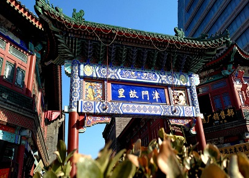
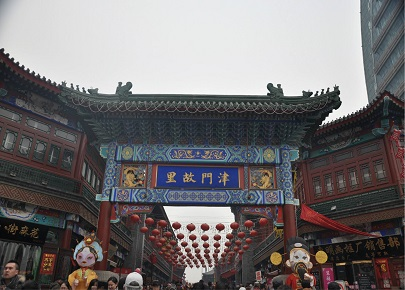
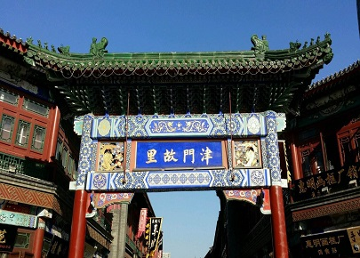
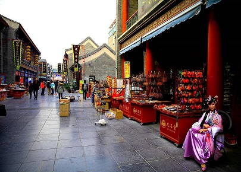

morly旅游网
亲民的城市，舒服的旅行
一提到天津，脑子里就会闪现出“天津卫”特有的口音读出来的“狗不理包子”。感觉天津是一个诙谐，幽默充满生活气息的城市。但当你真正来到这个城市，你会发现，这座城市除了有你印象中的亲民外，还有你想象不到的美。
同在华北平原，坐高铁到天津不到两小时。出站，美丽的海河就呈现在眼前。宽阔雄伟的解放桥横跨在平静无波的海河之上，这是座可以开启的钢结构桥。顺着海河一路走，大沽桥、进步桥、金汤桥等等，每座桥梁都有自己各有特色，风采不一。桥两边的建筑也多姿多彩，不像有的城市千楼一面。当然你也可以选择到码头坐上观光游船，在游船里听导游讲解每座桥的特点历史，听一听楼外的建筑特色和天津的风土人情。坐船最好的时间是晚上，夜幕降临，船行在海河里，看桥上灯光闪烁，河面波光粼粼，以最好的视角去看建在桥上的摩天轮——天津之眼，去仰望幸福。
天明，去水上公园，这里是天津最大的公园，围住面积巨大的湖泊而建，而且是免费的公园，天津城市的亲民特征再次体现。在这里，你可以看到一望无际的荷花，漂亮的日式建筑，各种美丽的花草。如果你带着小朋友，这里有各种游乐设施，可以划船，还有动物园。天气晴好，登上高高的楼阁远眺，公园的美景就尽收眼底了。
看完美景看建筑，去五大道，那里本为洋人的租借区，所以有各种风格的西洋建筑，英意法德等等各种风格。虽然会感慨祖国被租借的历史，但艺术没有国界。那风格各异的建筑确实精美绝伦，不由不让人感叹。（第五大道为街景，也不收费）
 来天津最不能错过的当然是“津门故里”，顾名思义，即天津的发源地。整个街区占地二万多平，不管你喜欢建筑，喜欢美食还是喜欢古玩，在这里你都会得到满足。这里的房屋都是清代的民间建筑风格，青砖红柱，彩绘门窗。一座座房屋错落有致，配着大红的灯笼，招展的酒旗，仿佛回到了明清盛世。去店里看一看泥人张的展品，一个个人物活灵活现，一个个物件如现实的缩小版，令人叹为观止。看看杨柳青的年画，笔墨纸砚，各种古玩还有工艺品。有的店铺在外面搭着架子就将所售物件摆在上面，或者就铺在地上任你挑选。当街饿了来几块炸糕，渴了喝一杯大碗茶，中午去尝尝狗不理包子，这就是天津卫的生活吧。
当你来到天津你会发现，这个城市静静的，淡淡的，哪都都没有拥挤的人群。天阔地宽，任你自在的行走观看。 作为一个直辖市，首都的邻居，这里的交通非常发达。飞机、高铁、自驾，选你最方便的出行方式来这里。天津限号与北京同步，并且一条路可能有两个名字，还有的路口呈龟字形，所以如果你的驾驶技术不是很强大，不建议选自驾的方式。
 内容整理至网络，如有侵权，请联系我们！1255394075@qq.com